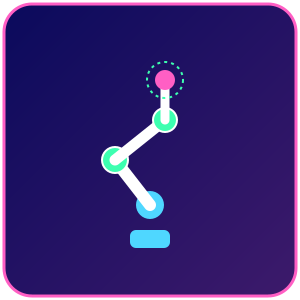

Projetado para trabalhar lado a lado com pessoas, com sensores de força e segurança que interrompem o movimento em caso de contato.

Robôs colaborativos, ou 'cobots', são manipuladores (geralmente de cinemática articulada) projetados desde o início para compartilhar o mesmo espaço de trabalho com operadores humanos, sem a necessidade de grades de proteção físicas. Isso é possível graças a sensores de força/torque em cada junta e softwares de segurança certificados.
Cada junta do cobot possui sensores de torque que detectam qualquer resistência inesperada ao movimento (como o contato com uma pessoa) e param o robô em frações de segundo, dentro dos limites definidos pela norma ISO/TS 15066. Muitos modelos também usam câmeras 3D e sensores de proximidade capacitivos na 'pele' do robô para reduzir a velocidade antes mesmo do toque, permitindo programação simplificada por demonstração (guiando o braço manualmente).
| Graus de liberdade | Tipicamente 6 ou 7 eixos rotativos |
|---|---|
| Capacidade de carga | 3 kg a 20 kg, em geral |
| Segurança | Sensores de força/torque em cada junta, parada segura por contato (ISO/TS 15066) |
| Programação | Por demonstração (guiar o braço) ou por interface gráfica simplificada |
| Velocidade | Reduzida em relação a robôs industriais tradicionais, priorizando segurança |
| Instalação | Não exige, na maioria dos casos, cercas de proteção física |
Cobots são um dos exemplos mais claros de dispositivo IoT industrial 'pronto para uso': trazem interfaces nativas para MQTT, REST API ou OPC UA, publicando continuamente dados de posição, força aplicada, alarmes de segurança e status do ciclo. Isso permite que pequenas e médias empresas implementem monitoramento em nuvem e dashboards de produção sem grande investimento em infraestrutura adicional.
| Fabricante | Modelo | Destaque técnico |
|---|---|---|
| Universal Robots | UR5e / UR10e | Referência de mercado em cobots, ampla comunidade e ecossistema de acessórios |
| FANUC | CRX-10iA | Cobot verde característico, programação simplificada |
| Techman Robot | TM5-700 | Câmera de visão integrada nativamente ao punho do robô |